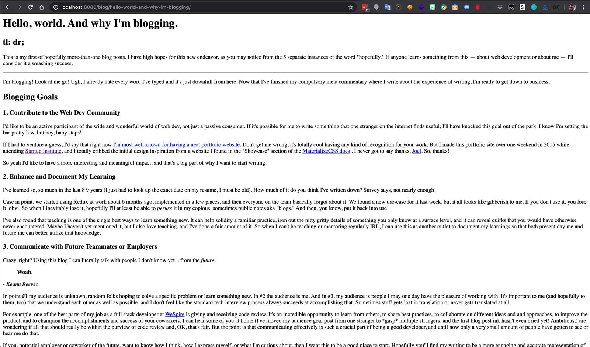
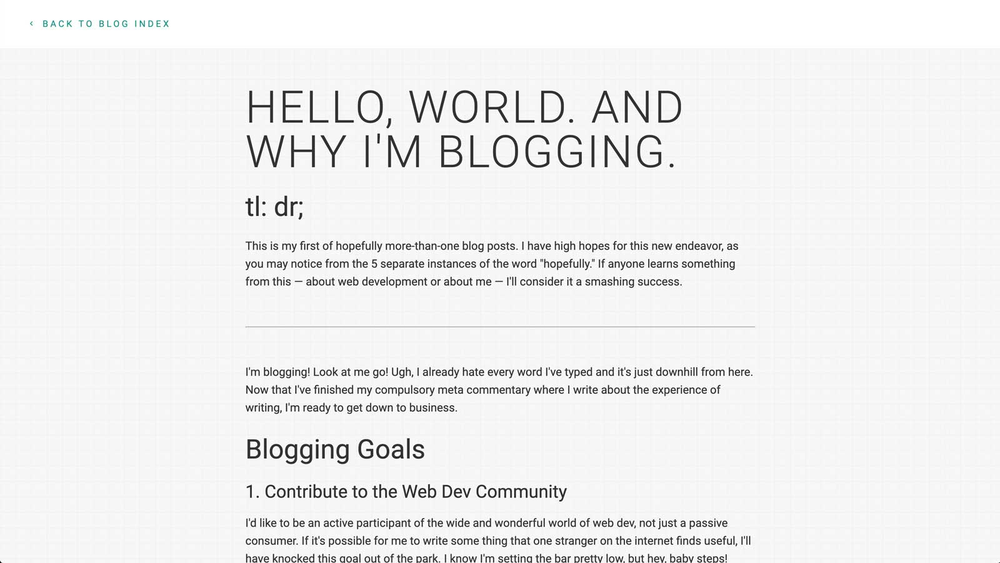

Moving my blog to Eleventy, Part 3: Creating Layouts
tl:dr;
Black lives matter
Last time around I had just published the second blog post in as many weeks. Then a global pandemic took more than 100,000 lives in the U.S. and George Floyd was murdered by police and my blog didn't feel so important anymore.
I've found it really challenging to know exactly what to do or say. So I've been trying to spend more of my energy on listening, learning, donating, and advocating. To that end, here are some resources I have found really useful or am currently working through:
- Organizations: Showing Up for Racial Justice & Equal Justice Initiative
- Books: Between the World & Me & Stamped From the Beginning
- Opinion: The Conscious Kid
If you're not already, I encourage you to work towards becoming actively anti-racist. Any amount of effort counts and our friends and neighbors are counting us.
Creating a blog layout
By the end of this post we'll have walked through how to create two layouts using Eleventy: a base layout for every page on the site and a blog layout specifically for blog posts that extends the base layout. In fact, this blog post was (finally) written in markdown and compiled using Eleventy.
View all posts in this Eleventy series:
Preface: Assessing where we are and making a plan
What we've done so far
Up to this point I've done the following:
- Install Node on the personal user account on my work laptop
- Follow Eleventy's Quick Start guide and an abridged version of their Getting Started guide.
My dev environment is all set up, Eleventy is now successfully installed, my website is now being powered by it locally. So what's next?
Command line usage? Already know enough.
If we simply move on to the next step the Eleventy docs, I'm directed to view some basic Eleventy Command Line usage, including $ npx @11ty/eleventy and $ npx @11ty/eleventy --serve, which we've already used. A quick perusal suggests I already know enough commands to get by and $ npx @11ty/eleventy --help can fill in the blanks in a pinch.
Onward.
Starter projects? A little too heavy.
Next in the docs are some Eleventy starter projects. Wow! 21 of them. Let's scan the descriptions for a few minutes... Web accessibility is something I've been steadfastly focusing on for the last few years and I'd consider it a non-negotiable for the new version of my website. When I grep the page for the word "accessible" I find the one match, the Hylia template. I've actually used it before, on my still-in-progress wedding website (for a wedding that has sadly been postponed due to global pandemic).
I like the template a lot, but it's way heavier than I want to start with in terms of eleventy configuration, layout, and style. I want to go as bare bones as possible, and build from the ground up. Maybe I'll get back to that template at some point, but I'd rather be familiar with all the pieces by time I do.
Moving ahead.
Tutorials? Promising but slow.
The last page in the docs features some Eleventy tutorials. The one called Build your own blog from scratch using Eleventy sounds right up my alley. Plus it's written by Zach Leatherman (he built Eleventy!) and posted to Filament Group (they are awesome and trustworthy). Let's take a quick gander at that and see if it looks promising...
OK, I perused it and feel like I'm ready to make the jump straight to the docs instead. He's already talking about Layouts and he links often to the Eleventy layout docs, anyhow. I'm itching to keep building, and don't want to fall down a tutorial rabbit hole.
Further into the official docs we go!
Layouts: Creating basic website and blog templates
Step 1: Choose a templating language
This is not technically the first step in the Eleventy docs. I've heard from other folks that the Eleventy docs leave something to be desired. I'm not done with them yet, but I already feel like they could be better organized. This might be one example.
The docs jump straight creating layouts, but their first example uses mylayout.njk and just below it they explain:
You can use any template language in your layout—it doesn’t need to match the template language of the content. An
ejstemplate can use anjklayout, for example.
Woah, woah, woah — what are njk aNd ejs referring to? I can infer they are templating languages, but... how do you choose one? And how many are there to choose from?? And how do I know if I've made the right choice??? (╯°□°)╯︵ ┻━┻
Getting stuck on unimportant details is a bad habit of mine. I want to choose the right templating language! This is supposed to be a fun, personal project, so might as well indulge myself a bit.
Fast forward — after plenty of unnecessary but predictably unavoidable hemming and hawing about which templating language to use (and about 20 min of Googling things like "best JS templating language" and "nunjucks vs liquid vs handlebars"), I'm settling on Nunjucks because Mozilla makes it and I trust them. The Hylia template also uses Nunjucks and CSS-Tricks seems to be fond of Nunjucks, too. Good enough for me!
Quick Aside: The Power of Asking Questions
PSA: If you don't understand something, ask about it! Phone a friend. Do some Googling. Watch a Youtube video. Read an article. Eat a cookie. Whatever you need to do to pause and get some extra understanding, just do it. It's totally fine if you don't know how everything works.
The idea that senior developers simply have more rote knowledge stored in their brains than junior developers is a total myth. You absolutely do build up some wisdom over time, and those hard-won instincts help you make better decisions. But mostly you get better at asking and questions and finding answers.
I was curious about how to choose a template language for my blog, so I took some time to learn!
On to the next task.
Step 2: Clean up the folder structure
Note: this next section may not apply to you if you're working with a new project from scratch.
I'm kinda of annoyed dealing with this public/ folder right now. It's a remnant of how my site used to be built, before Eleventy. Now that Eleventy will automatically parse my root folder and move files into the _site folder when compiled, I don't need to nest everything inside public/.
Firstly, I'll run run the Eleventy watch command, so it will listen for changes to my site and then automatically compile files based on those changes.
$ npx @11ty/eleventy --watch
Writing _site/README/index.html from ./README.md.
Writing _site/public/index.html from ./public/index.html.
Writing _site/public/blog/hello-world-and-why-im-blogging/index.html from ./public/blog/hello-world-and-why-im-blogging.html.
Writing _site/public/resume/index.html from ./public/resume/index.html.
Wrote 4 files in 0.09 seconds (v0.11.0)
Watching…
Now I'm going to move all the files out of the public/ folder
pulbic/
blog/
hello-world-and-why-im-blogging.html
and into the top-level root folder.
blog/
hello-world-and-why-im-blogging.html
Eleventy automatically compiles my files for me and tosses them into _site, like magic. 🎉
_site/
blog/
hello-world-and-why-im-blogging
index.html
blog/
hello-world-and-why-im-blogging.html
But, it also leaves the old files behind. Meaning I now have two copies of all my compiled files — one under /_site and another under /_site/public. 🤔
_site/
blog/ ⬅️
hello-world-and-why-im-blogging
index.html
public/
assets/
blog/ ⬅️
hello-world-and-why-im-blogging
index.html
blog/
hello-world-and-why-im-blogging.html
I'm a little curious about why this is, but not so much that I'm going to dive really deep into Eleventy docs or the source code. My guess is that it's just safer and simpler to compile files when it sees them, exactly as it sees them, and nothing more. In other words, don't blow away the entire _site folder during each compilation, because that would be expensive and maybe even dangerous. Just compile the files that changed. And if there's a conflict, well maybe Eleventy will warn me about it.
My guess is that if I simply delete the entire _site folder, then re-run $ eleventy I'll be good to go. BUT I've already moved my static assets/ folder in there and definitely don't want to lose that. Good thing the entire _site/ folder isn't blown away during every compile or else it would have deleted my entire /assets folder! There ya go, danger confirmed.
For now, I'll do 2 things:
- Manually move
assets/from_site/public/to_site/
_site/
assets/ ⬅️
blog/
hello-world-and-why-im-blogging
index.html
public/
blog/
hello-world-and-why-im-blogging
index.html
blog/
hello-world-and-why-im-blogging.html
- Delete the
_site/public/folder
_site/
assets/
blog/
hello-world-and-why-im-blogging
index.html
blog/
hello-world-and-why-im-blogging.html
Much better! This is what my entire site directory looks like now.
_site/
assets/...
blog/...
README/...
resume/...
index.html
blog/...
netlify_functions/...
node_modules/...
resume/...
.gitignore
CNAME
index.html
netlify.toml
package-lock.json
package.json
README.md
OK, now we've got a totally reasonable setup, given this new Eleventy tech stack. And, even better, it all works at http://localhost:8080/ now instead of http://localhost:8080/public. After all these changes, the _site/ folder is equivalent to the entire website that users will see. Everything outside of it is what we'll be using to build that site.
Let's make some ding dang templates already!
Step 3: Create an example blog post
I'm going to start by copy-ing my first blog post into a new markdown file. I eventually want all of my blog posts to be markdown because I find it much easier to write in markdown. I'm writing this very blog post in Notion, which is supports markdown composition and super easy exporting. So even though this file already exists in HTML, I'm going to convert the contents of it to markdown as an experiment, to see if Eleventy can successfully convert it back to HTML. That's the workflow I expect for all future blog posts, markdown to HTML.
To accomplish this conversion, I googled "HTML to markdown" and found Turndown, which after a single copy-paste worked swimmingly. When I run npx @11ty/eleventy --watch, change my original .html file to a .md file filled with blog post markdown, and save it — BOOM, Eleventy saw my markdown file, compiled it into HTML, and tossed it into in the _site directory as index.html. So cool!
_site/
blog/
hello-world-and-why-im-blogging
index.html
blog/
hello-world-and-why-im-blogging.md ⬅️
My website is still serving an HTML file, but it's now being compiled from markdown instead of from HTML. One thing that's different for users is that the old blog post was available at ...why-im-blogging.html and this one is available at ...why-im-blogging. That's actually a much better (and common) URL pattern, one that doesn't require .html at the end, so win-win.
Inside the blog post, what used to be HTML
<!DOCTYPE html>
<html lang="en">
<head>...</head>
<body>
<h1>Hello, world. And why I'm blogging.</h1>
<h2>tl: dr;</h2>
<p>This is my first of hopefully more-than-one blog posts...</p>
has now become markdown.
# Hello, world. And why I'm blogging.
## tl: dr;
This is my first of hopefully more-than-one blog posts...
But you may notice that my markdown doesn't contain anything about the <head> or <body>. That's because markdown isn't a good place for that. Markdown is for content, not layout. And that's the whole point of using a templating system like Eleventy! Write my content in markdown and wrap it in layouts using an HTML-like templating language. I want to be able to simply write the content of my posts in markdown, and have the entire blog post layout be automatically created around it.
I haven't built the blog layout yet, so my site is kind of a mess right now!

There's no <head> yet, containing all my stylesheets and other important styling and SEO stuff. Just some good ol' vanilla HTML blog post content. It's rather austere. Let's change that.
Step 4: Add front matter
Here comes the fun part: Front Matter. I'm not exactly sure why it's called that, but it's basically just data. Sort of like a fixed set of variables that we can use in our templates. And a simple way to start adding it is by including a title in between the two sets of ---.
---
title: Hello, world. And why I'm blogging.
---
# Moving my blog to Eleventy, Part 3: Creating Layouts
## tl: dr;
This is my first of hopefully more-than-one blog posts...
After saving the file, Eleventy automatically compiles again and the HTML output is exactly the same! The "handlebars" syntax of Moving my blog to Eleventy, Part 3: Creating Layouts is interpolated by Eleventy and converted into the value of the title front matter that's set at the top of the file.
Markdown:
---
title: Hello, world. And why I'm blogging.
---
# Moving my blog to Eleventy, Part 3: Creating Layouts
Compiled HTML:
<h1>Hello, world. And why I'm blogging.</h1>
This may not seem that valuable yet, but we'll learn more about why it is as we move further along. Let's try something more interesting, like adding a layout, as the Eleventy docs encourage.
---
layout: myLayout.njk
title: Hello, world. And why I'm blogging.
---
# Moving my blog to Eleventy, Part 3: Creating Layouts
According to the docs, Eleventy will look for a file called myLayout.njk inside an _includes/ folder in the root of your website directory. If this folder doesn't exist, we encounter a problem:
$ eleventy
Problem writing Eleventy templates: (more in DEBUG output)
> TemplateLayoutPathResolver directory does not exist for myLayout.njk: _includes
`Error` was thrown:
Error: TemplateLayoutPathResolver directory does not exist for myLayout.njk: _includes
No surprise there! I haven't created that layout file yet, or the _includes/ folder. So I'll do that now.
I expect to have lots of different types of layouts for not just things like blog posts, but also for individual resume blocks or portfolio links or skill items etc. So I'll create a folder just for high level layouts i.e. document wrappers inside a folder called layouts/. To start I'd like to have one layout for my blog posts, so that I can just write the content and the rest of the page will automatically be included.
---
layout: layouts/blog.njk ⬅️
title: Hello, world. And why I'm blogging.
---
# Moving my blog to Eleventy, Part 3: Creating Layouts
This is nice, but the docs also mention that you don't have to specify a file type for your layouts! So you can always change your mind later, e.g. move from layouts/blog.njk to layouts/blog.ejs. And if you leave off the file type from the front matter, that switch will be super easy. I like that flexibility, so that's why I'm leaving .njk off.
---
layout: layouts/blog ⬅️
title: Hello, world. And why I'm blogging.
---
# Moving my blog to Eleventy, Part 3: Creating Layouts
Step 5: Add a layout file to the _includes folder
As soon as I hit save on the post I've made, I get a helpful error from Eleventy!
Watching…
File changed: public/blog/hello-world-and-why-im-blogging.md
Problem writing Eleventy templates: (more in DEBUG output)
> TemplateLayoutPathResolver directory does not exist for layouts/blog: _includes
`Error` was thrown:
Error: TemplateLayoutPathResolver directory does not exist for layouts/blog: _includes
It's way ahead of me. I specified a layout file, but haven't actually created it yet. I'll add a file here
_includes/
layouts/
blog.njk ⬅️
that contains a very simple HTML wrapper (taken from the 11ty docs)
---
title: Andrew Borstein | Full-Stack Front-End Developer
---
<!doctype html>
<html lang="en">
<head>
<meta charset="utf-8">
<meta name="viewport" content="width=device-width, initial-scale=1.0">
<title>{{ title }}</title>
</head>
<body>
{{ content | safe }}
</body>
</html>
Then my local server automatically sees it (it's in --watch mode) and writes a new version of the blog html file!
Watching…
File changed: _includes/layouts/blog.njk
Writing _site/README/index.html from ./README.md.
Writing _site/public/index.html from ./public/index.html.
Writing _site/public/blog/hello-world-and-why-im-blogging-orig/index.html from ./public/blog/hello-world-and-why-im-blogging-orig.html.
Writing _site/public/resume/index.html from ./public/resume/index.html.
Writing _site/public/blog/hello-world-and-why-im-blogging/index.html from ./public/blog/hello-world-and-why-im-blogging.md.
Wrote 5 files in 0.03 seconds (v0.10.0)
Watching…
You may have noticed that my title in the blog.njk file is different than the one in my actual blog post. That's because front matter cascades, kind of like CSS. The value I set in the layout file will be the default, and if I set one in the blog post it will override the default.
Using one title attribute also provides the convenient advantage of letting me set the front matter once and use it in multiple places. Every file in this cascade of templates that uses the title data will return whatever the final value is. In practice that means both the layout <title> and the blog post <h1> will be set to "Hello world, and why I'm blogging", even though the default value is "Andrew Borstein | Full-Stack Front-End Developer". It's also a good practice in general to sync your document title and the h1 on a given page.
My blog post now has a basic (but totally legit) wrapper! I'm using templates again, wow, what a relief. I haven't yet ported over my actual website template, or fancy features like linkable headings, or other accessibility enhancements. I'll come back to that.
Step 5: Finish the layouts
For now, I know that my blog post template will be slightly different than my website page template, and that both will probably extend one base template. Given that, I'll actually change blog.njk to base.njk.
_includes/
layouts/
base.njk ⬅️
For the moment, my blog post will be broken because I'm still telling it to look for layouts/blog in the front matter. But I can quickly create a new blog layout that extends ("chains", in Eleventy terms) the base layout.
_includes/
layouts/
base.njk
blog.njk ⬅️
---
layout: layouts/base
---
<a class="back-to-index" href="/#blog">
Back to blog index
</a>
<main>
<article>
{{ content | safe }}
</article>
</main>
Note that the blog layout itself uses the base layout via layout: layouts/base. The two are chained together, so now when I set layout: layouts/blog in my blog post:
- The blog post will use the blog layout
- The blog layout will use the base layout
In other words the chain is base layout ⇒ blog layout ⇒ post. Putting everything we've done so far together renders the following HTML, auto-magically:
<!DOCTYPE html>
<html lang="en">
<head>
<meta charset="utf-8" />
<meta name="viewport" content="width=device-width initial-scale=1" />
<title>Hello, world. And why I'm blogging.</title>
<head>
<body>
<a class="back-to-index" href="/#blog">
Back to blog index
</a>
<main>
<article>
<h1>Hello, world. And why I'm blogging.</h1>
</article>
</main>
</body>
</html>
Awesome! My site still looks pretty terrible, so let's add back the missing stylesheets to our base layout. While we're there let's add a description for better SEO and share-ability and include JS needed for the Materialize framework I'm currently using (but hoping to deprecate very soon).
---
description: I want to make things that make a difference.
title: Andrew Borstein | Full-Stack Front-End Developer
---
<!doctype html>
<html lang="en">
<head>
<!-- Metadata -->
<meta charset="utf-8">
<meta name="viewport" content="width=device-width, initial-scale=1.0">
<title>Moving my blog to Eleventy, Part 3: Creating Layouts</title>
<meta name="description" content="We walk through how to create two layouts using Eleventy: a base layout for every page on the site and a blog layout specifically for blog posts that extends the base layout." />
<!-- CSS -->
<link rel="stylesheet" href="...materialize.min.css" />
<link rel="stylesheet" href="...font-awesome.min.css" />
<link rel="stylesheet" href="/assets/css/style.css" />
</head>
<body>
{{ content | safe }}
<!-- Javascript -->
<script src="...jquery.min.js"></script>
<script src="...materialize.min.js"></script>
</body>
</html>
And if I want some custom styles just on blog pages (I do!), I can add that directly to my blog layout file, so they will only be included on blog post pages.
---
layout: layouts/base
---
<style>
/* Blog Styles */
body {
color: #333;
font-size: 16px;
}
a {
color: #009688;
}
main {
background: url(/assets/img/bg.png) repeat;
}
</style>
<a class="back-to-index" href="/#blog">
Back to blog index
</a>
<main>
<article>
{{ content | safe }}
</article>
</main>
And so on, and so on. By the time I'm done with all my changes, my single blog post page is back to looking the way it used to 🎉

Next Steps
I've made huge progress! But I'm only touching the tip of the iceberg. Eleventy is the foundation that will help me
- write blog posts in markdown and have them automatically converted to HTML
- easily change the layout of all my blogs posts at once time
That's all well and good, but there's so much more I want to tackle. The biggest items on my to do list are
- create a blog collection, so I can publish a new post and have it automatically my blog index
- create shortcodes, for each type of repeated section of my portfolio like Projects
- better code syntax highlighting in blog post
And I've got a giant wish list of enhancements somewhere that includes some more ambitious things, like removing jQuery and Materialize dependencies, enhancing accessibility, configuring the site as a progressive web app, creating an open source portfolio template, etc...
One step at a time, though! Stay tuned for the next installment, and thanks for reading.
Email me anytime to offer feedback, ask questions, or just say hello 👋.